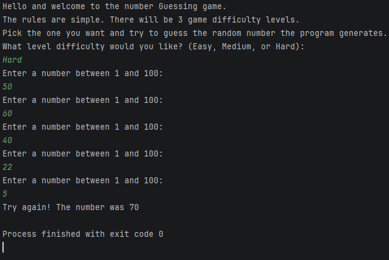

My first python program
Posted on June 3, 2024

My first real Python project wasn’t some mind‑blowing AI tool or a fancy website or anything that would make a senior developer raise an eyebrow. It was a number guessing game, simple, tiny, and honestly kind of goofy. But when I finished it, I felt like I had just built a fully functioning RPG engine from scratch. That’s the magic of early wins in programming. They hit way harder than they should, and I’m not ashamed to admit I was hyped.
Before this project, I had bounced around between languages like a kid trying every arcade machine without actually learning how to play any of them. C#, C++, back to C#, then quitting, then trying again, you get the idea. I kept trying to jump straight into the “cool stuff” without learning the basics, and shocker, that didn’t work out. But after finishing an absolute beginner Udemy course, something finally clicked. I decided to slow down, breathe, and build something small just to see what I could do on my own.
That’s where this little number guessing game came from. I wanted something that wasn’t too easy, but also wasn’t going to make me question my life choices. A game with a few difficulty levels, a random number generator, and a loop that gives the player five chances to guess correctly. Nothing crazy but enough to make me think and actually apply what I learned.
The idea was simple:
• Easy mode: guess a number between 1 and 10
• Medium mode: guess a number between 1 and 50
• Hard mode: guess a number between 1 and 100
Five tries. No hints. Just vibes and pain.
And here’s the thing. Writing this code taught me more than the tutorial videos did. When you’re following along with a course, everything feels easy because someone is holding your hand. But when you’re staring at a blank file thinking, “Okay… now what?”, that’s when the real learning starts.
So here it is the original, unedited version of my number guessing game. It’s not perfect, but it’s mine, and it represents the moment I realized I could actually build things.
import random
print("Hello and welcome to the number Guessing game.\nThe rules are simple. There will be 3 game difficulty levels.\nPick the one you want and try to guess the random number the program generates.")
level = input("What level difficulty would you like? (Easy, Medium, or Hard):\n")
easy_dif = "Easy"
med_dif = "Medium"
hard_dif = "Hard"
def easy_mode():
counter_easy = 0
user_input_easy = 0
random_number = random.randint(1, 10)
while user_input_easy != random_number and counter_easy < 5:
counter_easy += 1
user_input_easy = int(input("Enter a number between 1 and 10:\n"))
if user_input_easy == random_number:
print("You guessed the correct number!")
if counter_easy == 5 and user_input_easy != random_number:
print(f"Try again! The number was {random_number}")
def med_mode():
counter_med = 0
user_input_med = 0
random_number = random.randint(1, 50)
while user_input_med != random_number and counter_med < 5:
counter_med += 1
user_input_med = int(input("Enter a number between 1 and 50:\n"))
if user_input_med == random_number:
print("You guessed the correct number!")
if counter_med == 5 and user_input_med != random_number:
print(f"Try again! The number was {random_number}")
def hard_mode():
counter_hard = 0
user_input_hard = 0
random_number = random.randint(1, 100)
while user_input_hard != random_number and counter_hard < 5:
counter_hard += 1
user_input_hard = int(input("Enter a number between 1 and 100:\n"))
if user_input_hard == random_number:
print("You guessed the correct number!")
if counter_hard == 5 and user_input_hard != random_number:
print(f"Try again! The number was {random_number}")
if level == easy_dif:
easy_mode()
elif level == med_dif:
med_mode()
elif level == hard_dif:
hard_mode()
Now let’s break down what’s actually happening here — in normal human language, not “textbook Python wizard” language.
The first thing the program does is greet the player and ask what difficulty they want. This is just a simple input prompt, but it sets the tone. Then we store the difficulty names in variables like easy_dif and med_dif. Could I have just compared the input directly? Sure. Did I understand that at the time? Absolutely not. So variables it was.
Each difficulty level has its own function. This was my first time writing multiple functions in a single program, and it made me feel like I had unlocked some secret developer ability. Inside each function, the game generates a random number using random.randint(). Then it enters a loop that gives the player up to five attempts to guess the number.
Every time the player guesses, the counter goes up. If they guess correctly, the game celebrates. If they burn through all five tries, the game reveals the number and tells them to try again. It’s simple, but it teaches you the core of programming: logic, loops, conditions, and user interaction.
The coolest part for me was realizing how much power functions give you. Instead of writing the same logic three times, I could wrap each difficulty in its own little box. It made the code feel organized, even if I didn’t fully understand why that mattered yet.
Looking back, this project feels tiny but at the time, it was everything. It was the first moment where I wasn’t just watching someone else code. I was doing it myself. And that’s the moment every beginner needs. That first spark where you think, “Wait… I can actually do this.”
If you’re learning to code right now, don’t underestimate these small projects. They’re not just practice, they’re proof. Proof that you’re improving. Proof that you can build things. Proof that you’re not just consuming tutorials, but actually creating.
And trust me, once you get that first win, even a tiny one, it becomes a lot easier to keep going. This little number guessing game was my first win. And it won’t be my last.